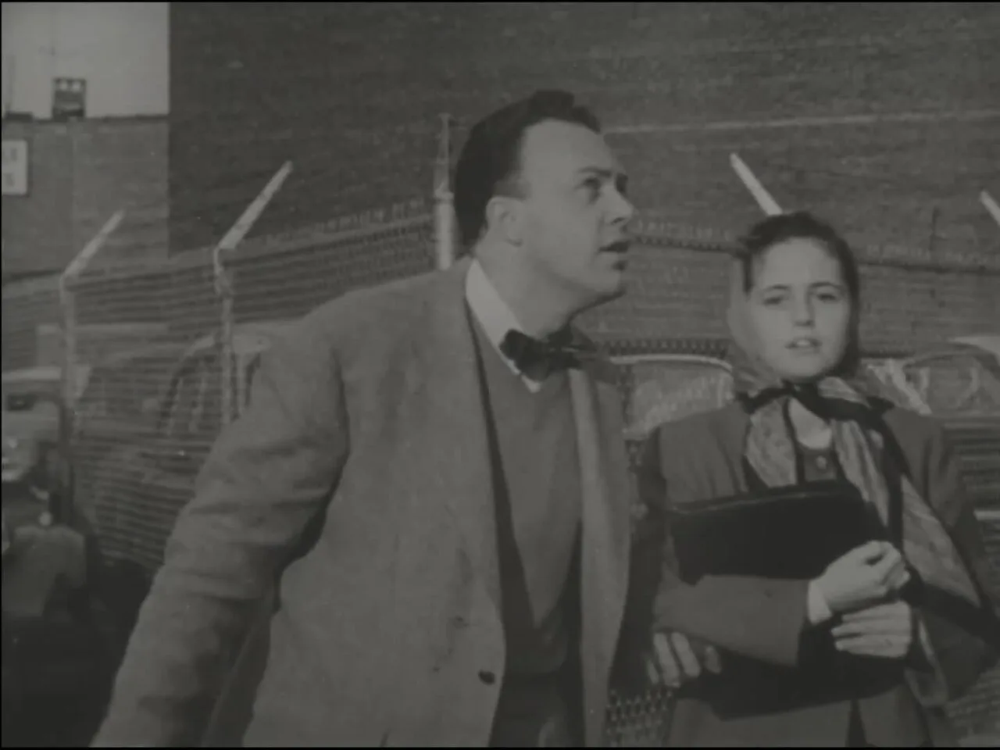
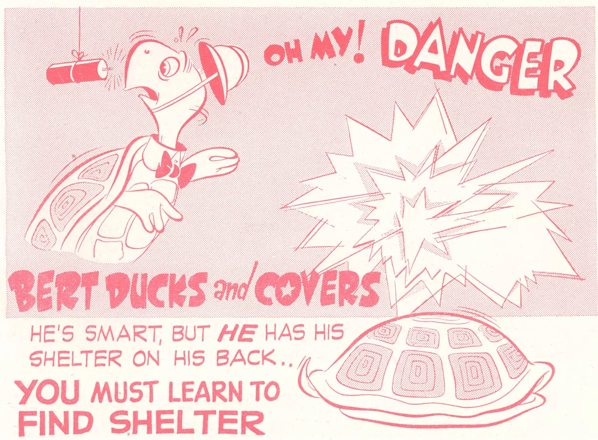
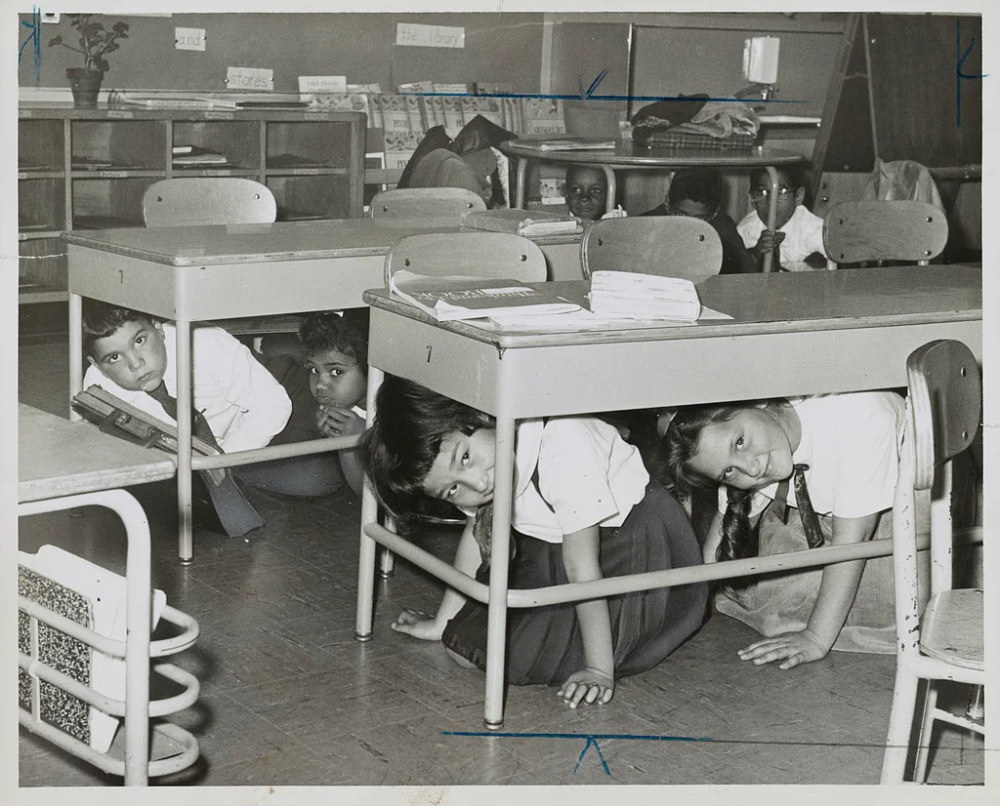

A simple instruction for an impossible fear
Duck and Cover used animation and live action to teach children a rehearsed response to danger. The most famous image is Bert the Turtle, a character who makes the instruction feel teachable. The mismatch is why the film remains culturally powerful. A friendly cartoon tries to manage a terrifying geopolitical reality.
It is easy to mock the film from the present, but that response misses part of the point. Public safety communication often reduces complex risks to simple actions. Fire drills, earthquake drills, seatbelt reminders, and emergency alerts all rely on scripts people can remember under stress.

Why it survived as an artifact
The Library of Congress preserves Duck and Cover as a historically significant film, and that preservation matters. The film is not only evidence of civil defense policy. It is evidence of how the state imagined children, schools, media, and fear during the early Cold War.
Its strangeness comes from tone. The subject is catastrophic; the presentation is cheerful. That contrast makes the film feel unreal, but it also makes it unforgettable.
The useful lesson
Duck and Cover is a case study in public instruction under uncertainty. It shows how institutions convert dread into behavior. Whether a viewer finds it naive, manipulative, practical, or all three, the film reveals a basic design problem: how do you tell ordinary people what to do when the danger is too large to fully explain?
Why Bert the Turtle worked
The film needed a behavior that children could recognize, remember, and rehearse. Bert's shell made cover visible. A catchy song reduced the instruction to a phrase. Live-action scenes then moved the behavior from cartoon logic into classrooms, streets, and playgrounds. The communication design used repetition across formats rather than relying on a technical lecture.
This does not settle whether the film honestly represented the full scale of nuclear danger. It explains why the message traveled. Emergency communication often competes with fear, denial, and limited attention. A memorable character can carry an instruction farther than a page of probabilities.

Protection is not the same as safety
Modern ridicule often treats the film as if it promised that a desk could make nuclear war harmless. The actual historical artifact is more complicated. Taking cover could reduce injury from flash, flying debris, or broken glass under some conditions, while offering little protection in others. A limited protective action and a comprehensive survival guarantee are not the same claim.
That distinction matters whenever institutions communicate extreme risk. If guidance describes every caveat, it may become unusable in the moment. If it removes every caveat, it may become misleading. Duck and Cover sits inside that unresolved tension.
What the film records beyond the instruction
The nine-minute film also records an institutional picture of childhood. Teachers, civil defense workers, schools, parents, and older children form a chain of authority. Children are asked to respond quickly and then wait for adults. The film therefore documents not only nuclear fear but a theory of social order.
Its preservation in the National Film Registry allows viewers to examine that theory directly. The value of the film today is not that it supplies current emergency advice. It lets us see how one era made an unbearable threat teachable.
